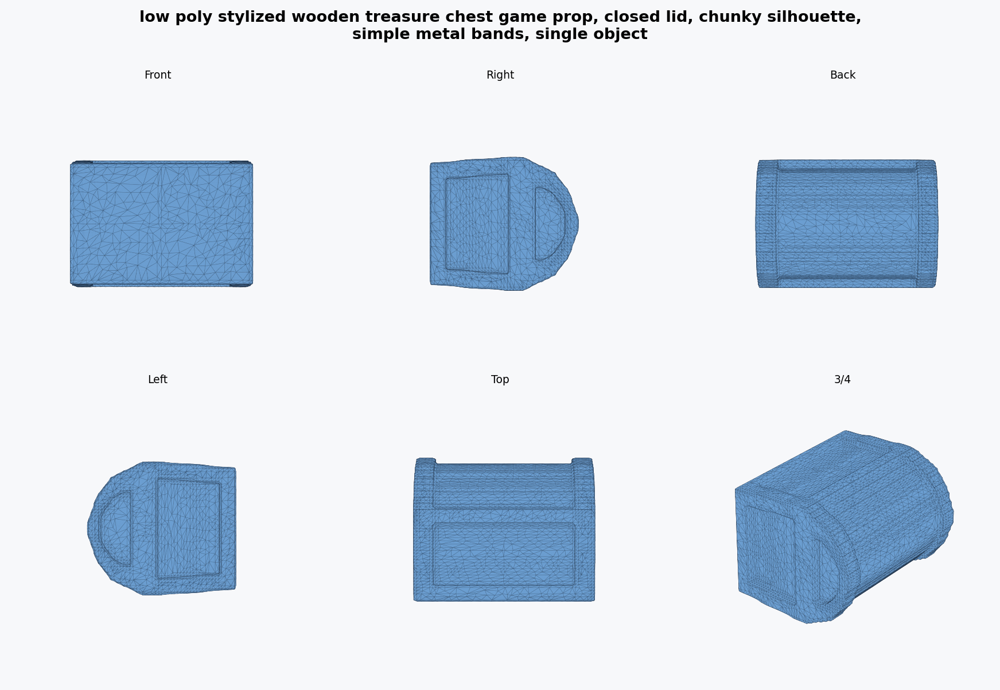
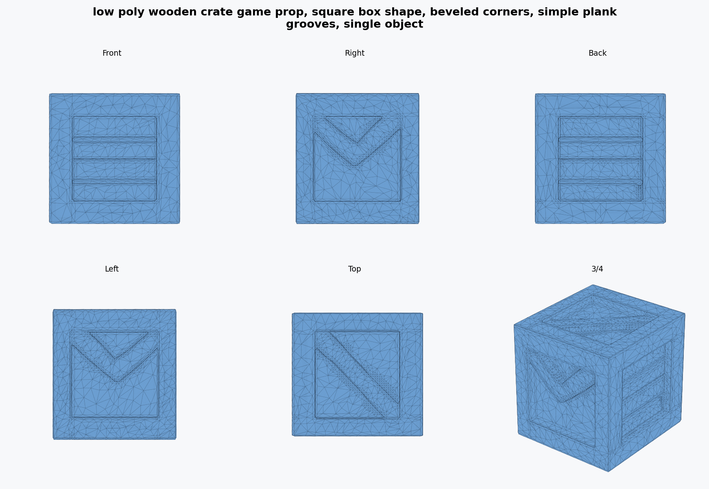
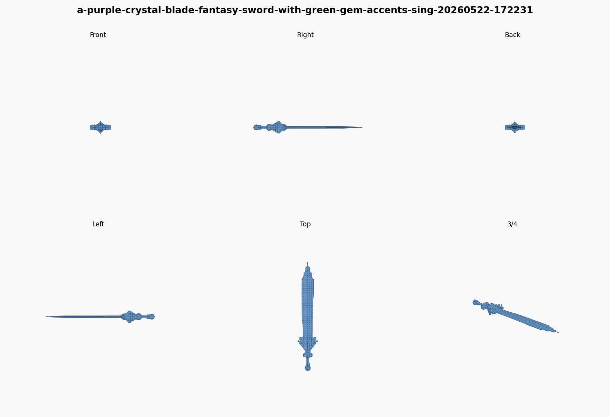
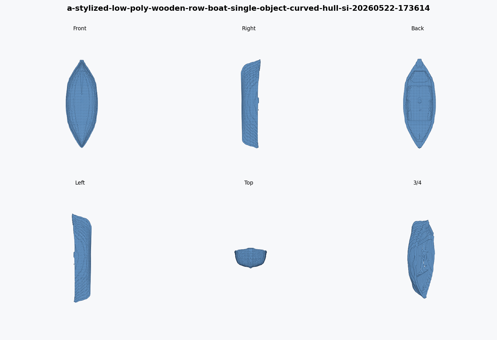

Low-VRAM runner
CLIP runs on CPU, GPT runs on GPU, then the shape decoder loads after GPT is unloaded. That staging is what made real Cube 3D runs fit on this machine.
CubeLite Studio is a local app for running Cube 3D, tracking VRAM, inspecting generated OBJ files, simplifying meshes, and packaging Roblox-ready test folders. It does not ship Cube 3D weights and it is not an official Roblox project.
A practical wrapper around the parts that matter when a creator tries this locally.
CLIP runs on CPU, GPT runs on GPU, then the shape decoder loads after GPT is unloaded. That staging is what made real Cube 3D runs fit on this machine.
Each run writes generation time, peak VRAM, triangle count, file size, readiness notes, logs, and error messages.
The app renders front, side, back, top, and 3/4 views so bad geometry is obvious instead of hidden behind one pretty screenshot.
Exports include the original OBJ, optimized OBJ when available, metadata, benchmark summary, render plate, and import notes.
These are local numbers from one laptop, not a claim about every machine.
| Run | Profile | Peak VRAM | Triangles after cleanup | Notes |
|---|---|---|---|---|
| Official-style baseline | High memory path | ~5.98GB, OOM | n/a | Did not finish on the 6GB GPU. |
| Treasure chest candidate | 6GB Quality, seed 202 | 4.16GB | 14,000 | Best current chest. Needs Roblox Studio import testing. |
| Wooden crate candidate | 6GB Quality, seed 404 | 4.16GB | 12,000 | Cleaner candidate than the first crate run. |
| Low-VRAM baseline | Low VRAM | 3.93GB | varies | Useful for proving the path works, not always best quality. |
I would not call these finished marketplace-quality assets. They are the best local candidates so far, shown from multiple angles.

Readable blocky prop. The back and top views are stronger than earlier attempts; the side still shows why cleanup matters.

Best simple prop candidate. It has a clear cube silhouette and visible panel grooves from several angles.

Good prompt adherence, but it still needs scale checks and surface cleanup before I would present it as final.

Kept as a useful baseline. Some views read well, others show rough geometry. That is exactly why the render plate exists.
The project is stronger when the rough parts are visible.
The good outputs come from running multiple seeds and keeping the best candidate, not from pretending the first result is production-ready.
The next real test is import scale, normals, collision behavior, and whether cleanup in Studio is reasonable.
Cube 3D currently generates geometry. Texture generation is listed upstream as future work, so CubeLite should not imply textured output.